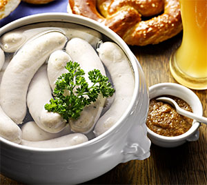
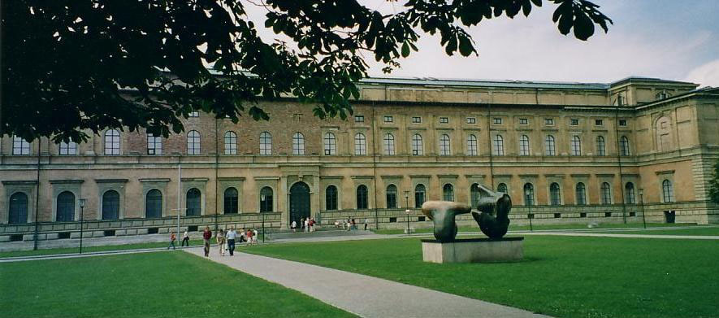
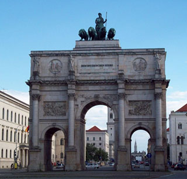

Múnich es una ciudad de historia y tradición. Tiene un papel importante como centro económico. Es una de las ciudades industriales más grandes de Alemania. La ciudad tiene varios comercios modernos, clubes nocturnos, cervecerías y fiestas donde participa la comunidad y sus visitantes.
Miluska: Múnich es una ciudad de historia y tradición. Tiene un papel importante como centro económico. Es una de las ciudades industriales más grandes de Alemania. La ciudad tiene varios comercios modernos, clubes nocturnos, cervecerías y fiestas donde participa la comunidad y sus visitantes.
Gastronomía: La gastronomía de Múnich se encuentra influenciada por la cocina extranjera, teniendo como base de muchos de sus platos a la harina, empleada para hacer platillos de entrada, platos fuertes, postres y demás.
Fiestas y eventos: el Oktoberfest, El evento mñas importante de Múnich es el Oktoberfest entre los meses de septiembre y octubre. Se realiza en el campo Theresienwiese, en la ciudad de Múnich, congregando cerca de 6 millones de almas.
Las tres pinacotecas: La Pinacoteca Antigua, la Nueva y la de Arte Moderno, poseen en su interior las diversas manifestaciones artísticas de los más grandes representantes del arte europeo.
Catedral Nuestra Señora de Múnich: Conocida como La Frauenkirche (cuyo nombre completo es Dom zu Unserer Lieben Frau, en alemán) se encuentra situada en el centro de la ciudad en la Frauenplatz considerada como una de las más importantes atracciones turísticas de la ciudad.
Siegestor (Puerta de la Victoria): Construido con el fin de conmemorar una guerra por parte de los bávaros, el paso de los años y la destrucción que sufrió Alemania generó que este monumento sea destruido, sin embargo tras su reconstrucción se convirtió en emblema de paz dentro de la ciudad de Múnich.
